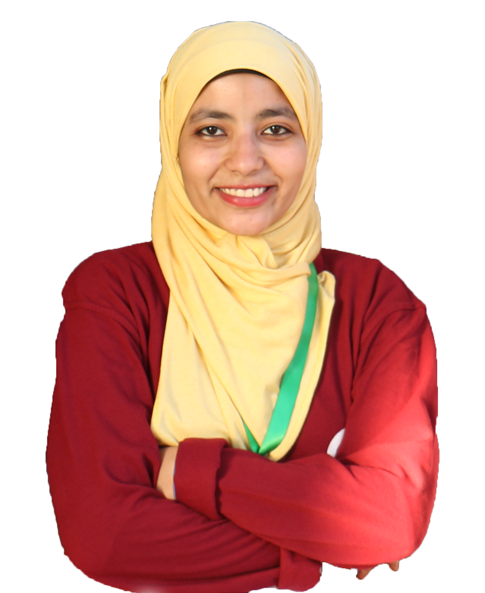

Rokaya Ismail Hussein Mohamed
PERSONAL STATEMENT
After graduation, it was a necessity to choose my specialization and start my career. Being a fresh graduated engineer made me think about what I have not learned or achieved yet, about my passion, aspiration and goals. I believe joining Information Technology Institute achieves all what I have been thinking about.
EDUCATION
- Aswan university (2013-2018), Bachelor of Electrical Engineering, Computer and systems section, distinct with honor grade, 3rd of my department, 1st of my section.
TECHNICAL SKILLS
- Good at Writing software requirements, software modeling, software design and software implementation.
- Programming languages (visual Basic, C/C++, Java, JavaScript, PHP, SQL, Assembly, PLC )
- Web technologies (HTML5, CSS, SVG)
- Hardware (Arduino and PIC microcontrollers, spartan3 FBGA and Virtex-5 FBGA with VHDl)
- Good at problem solving.
- Database design
- Software tools (Microsoft office, LTspice, Logisim, Siemens Semantic Manager S7, PICkit3, PICsimlab, DosBox with MASM, emulator emu8086, MySQL workbench ,Wamp server ,Xampp server ,Xilinx ,Netbeans IDE, VS IDE, Prezi, Inkscape, Brackets editor, Sublim editor, VS code editor)
PERSONAL SKILLS
- Good communication with other people
- Leadership and the ability to motivate other members
- Creativity
- Self-confident
- Ability to work independently or as a part of team
- Ability to work under pressure
ACHIEVEMENTS
COMPETITIONS AND AWARDS
-
Software Track:
- Upper Egypt in Action (UEA 4) Exhibitor with Graduation Project (Virtual E-Lab) (April, 2018).
- Programming Day Participant (May 2017) with Question Bank Website Using Wordpress in the frontend and PHP in the backend.
- Creative Programming Contest Participant (CPC) (May 2014) with Advanced Calculator using Visual Basic Programming.
-
Embedded software Track:
- Aswan practical engineering Lab (APEL) team member 2014-2018
- Aswan practical engineering Lab (APEL) monitor 2017-2018
- Participated in Line Follower Competition at El-Minia university 2014
- Participated in IRC Competition at Benha university 2015
- Participated in Robocon Competition at Helwan university 2016
- Participated in Grid Follower Competition at El-Minia university 2016
- Participated in Robocon Competition at 10th of Ramadan university 2017
VOLUNTEERING HISTORY
- International Conference on Innovative Trends in Computer Engineering ITCE international conference volunteer 2018
- Intel ISEF Aswan Volunteer 2014-2015
- Zewail City Friends ZCF Aswan Previous member 2015
- IEEE Aswan student branch:
- IEEE member in Aswan Student Branch 2013-2014
- IEEE Volunteer in Aswan Student Branch 2014-2018
- Upper Egypt in Action (UEA 1) head of registration team 2015
- Upper Egypt in Action (UEA 2) head of Competition team 2016
- Upper Egypt In Action (UEA 3) P.M. assistant 2017
- Upper Egypt in Action (UEA 4) head monitor of competition team 2018
INTERNSHIPS & TRAININGS
- Embedded System camp at swift act (Summer of 2017)
- Summer training in Aswan International Airport (August 2016)
- Attendee of Innovation Camp from TIEC (February 2015)
- Intel Ideation Workshop (February 2015)
- Summer training in Telecom Egypt (Summer 2015)
- Web Development course (Summer of 2014)
PROJECTS
GRADUATION PROJECT
- The main idea for our graduation project is to produce Digital Training System M21-5000 tool that exists in our Faculty's Laboratory Virtually through Web Based Application.
- We Studied software engineering from Somerville's book and applied it on our graduation project (requirement and specification, implementation using JavaScript, HTML5, SVG and DOM then testing.
MINI ACADIMIC PROJECTS
- Question Bank Website - 2017(PHP, Html, SQL and CSS).
- ITCT Aswan website - 2017(HTML, CSS, JavaScript and SQL).
- Snake Game - 2017 (Assembly 8086).
- Polishing Machine PLC software- 2017 (Ladder Logic).
- Library Management System - 2016 (JAVA, OOP and SQL).
- ATM System - 2016 (C++ and OOP).
- MIPS implementation - 2016(VHDL).
- Digital Calendar-2016 (Combinational Digital Logic Implementation).
- Electromagnetic train-2015 (Electromagnetic Field).
- Advanced Calculator - 2014 (visual basic).
LANGUAGE
- ARABIC: Main language
- ENGLISH: Good
HOBBIES AND INTERESTS
- Problem solving
- Mathematical quizzes solving
- Video games
- Having a knowledge about new technologies
- Crochet patterns making